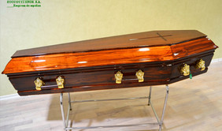
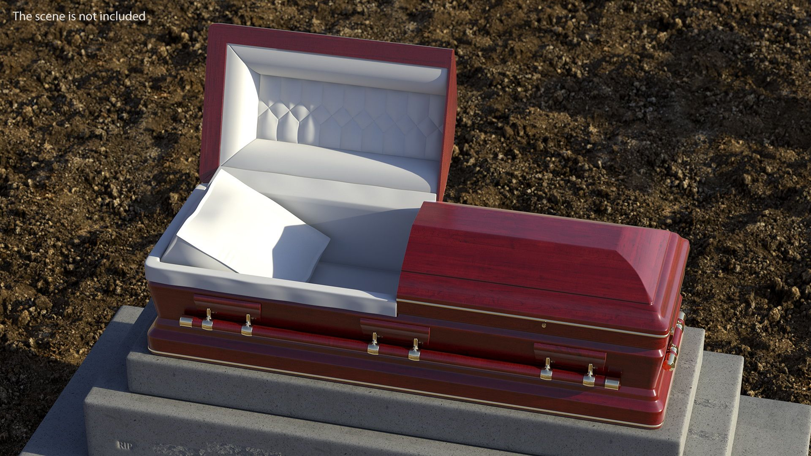
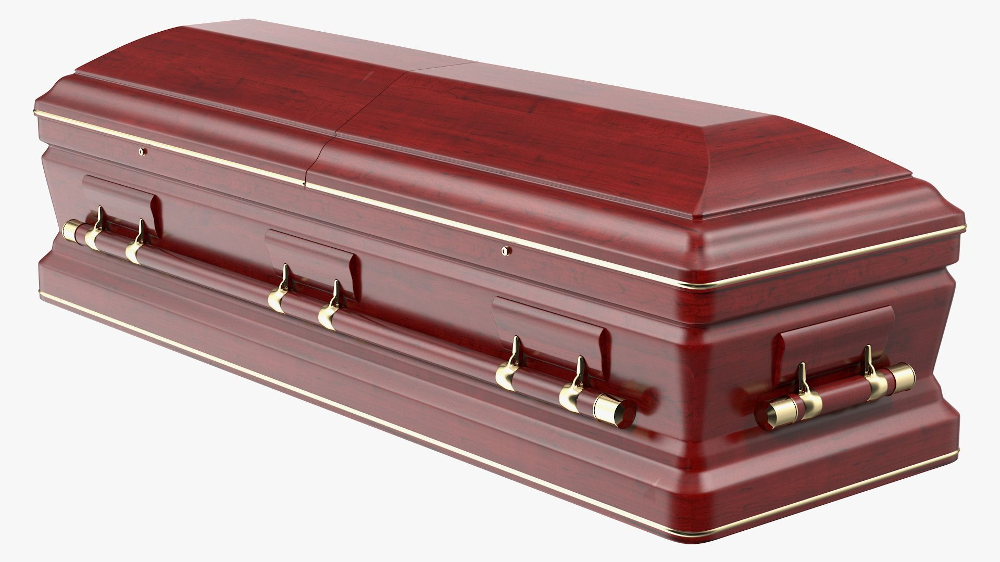
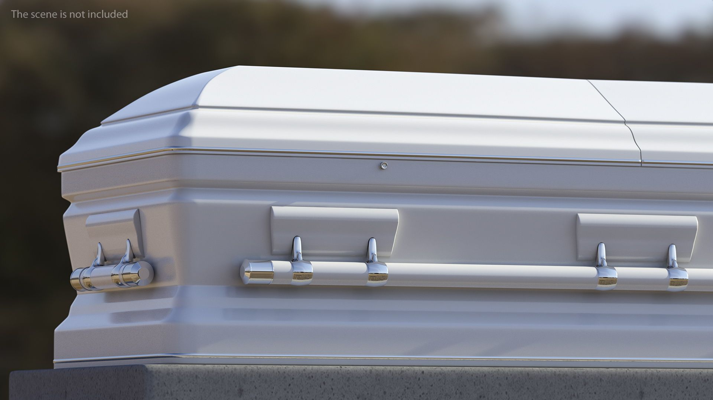
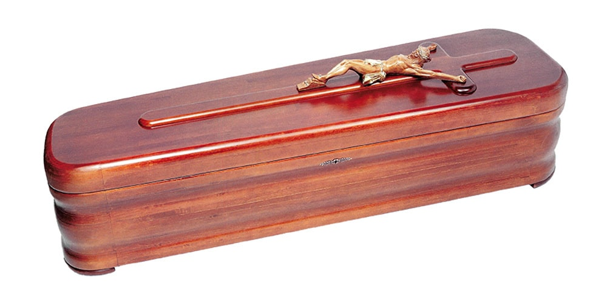

Modelos
Modelos Básicos
Ataúd de Pino Sencillo
Descripción: Este modelo es ideal para aquellos que buscan simplicidad y economía. Está hecho de madera de pino, con un diseño minimalista y sin adornos. El acabado liso y la estructura robusta lo hacen funcional y adecuado para servicios funerarios básicos.
Uso sugerido: Adecuado para quienes prefieren un enfoque más sencillo o para servicios con cremación posterior.
Ataúd de Madera Contrachapada
Descripción: Un ataúd asequible pero duradero, fabricado con madera contrachapada de alta calidad. Su acabado liso y el tapizado de tela blanca brindan una apariencia limpia y sobria.
Uso sugerido: Perfecto para aquellos que buscan un ataúd económico pero confiable para servicios tradicionales o cremación.
Modelos Estándar
Ataúd de Roble Clásico
Descripción: Este modelo de gama media está construido con madera de roble, conocido por su durabilidad y belleza. El acabado barnizado y el tapizado acolchado aportan un toque de elegancia.
Uso sugerido: Ideal para familias que buscan un ataúd resistente con una apariencia clásica y un presupuesto moderado.
Ataúd de Caoba
Descripción: El ataúd de caoba es una opción elegante y duradera. La madera de caoba se destaca por su rico color y resistencia. Incluye detalles tallados y un acabado brillante.
Uso sugerido: Recomendado para servicios funerarios que requieran una presentación elegante y tradicional.
Ataúd de Madera Maciza con Adornos
Descripción: Construido con madera maciza, este modelo ofrece detalles ornamentales y un tapizado acolchado de alta calidad. Combina durabilidad y diseño artístico.
Uso sugerido: Ideal para familias que desean un ataúd con detalles decorativos que reflejen sofisticación y calidad.
Modelos de Lujo
Ataúd de Nogal con Incrustaciones
Descripción: Este ataúd de lujo está hecho de madera de nogal con incrustaciones decorativas. El tapizado de seda y el acabado refinado añaden un toque de elegancia.
Uso sugerido: Perfecto para servicios funerarios de alto nivel donde se busca una presentación lujosa y detallada.
Ataúd Personalizado con Diseño Único
Descripción: Este modelo ofrece personalización total, permitiendo a los clientes elegir grabados, colores y detalles a medida. Está diseñado para reflejar la individualidad y los gustos personales.
Uso sugerido: Recomendado para familias que desean un ataúd completamente personalizado que honre la personalidad y preferencias del difunto.
Ataúd Metálico de Lujo
Descripción: Fabricado con acero inoxidable o bronce, este ataúd metálico de lujo es extremadamente duradero y resistente a la corrosión. Los acabados decorativos y el tapizado de alta gama ofrecen una experiencia visual impresionante.
Uso sugerido: Ideal para aquellos que buscan un ataúd que destaque por su longevidad y estética refinada.




